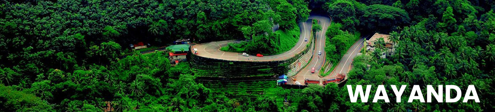
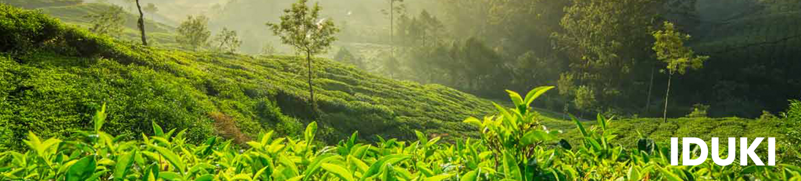
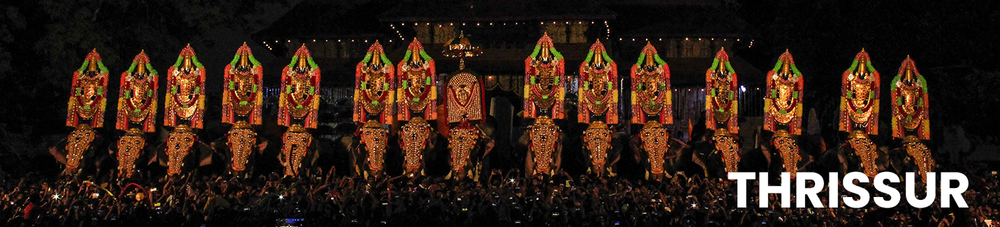
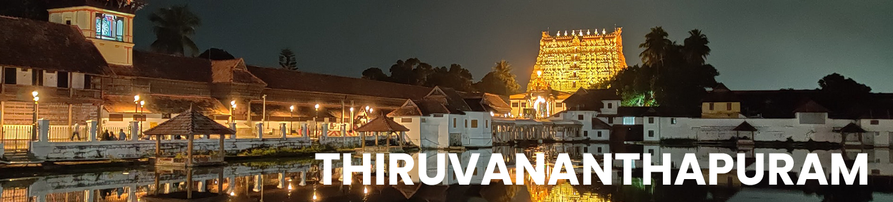
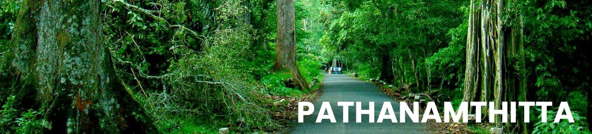

The performing arts of God’s Own Country have a special pull and connection amongst all audiences.
On stage or by the road, the setting is never the primary attraction but rather. Performing art are important pillars of our heritage.
Kerala is home to a number of spectacular beaches that will take your breath away
Tourist destinations in Kerala are beaches like Kovalam, Varkala, Chowara, Chavakkad, Nattika, Cherai, Kizhunna, Poovar and the list goes on and on.
Spices have always played an integral part of Kerala's history.
The famous international restaurant chains or local eateries, we have everything a foodie could ask for prepared with that special Kerala taste to it.
Hon'ble Cheif Minister
Hon'ble Minister for Tourism
Secretary of Tourism Dept.
RT Mission is the nodal agency formed by the Government of Kerala to spread and implement the ideologies and initiatives of Responsible Tourism all over the State. Mr. Pinarayi Vijayan, Chief Minister of Kerala launched the Responsible Tourism Mission on 20th October 2017. The Mission is envisaged with a 'triple-bottom-line' mission which comprises economic, social and environmental responsibilities. Making tourism a tool for the development of village and local communities, eradicating poverty and giving emphasis to women empowerment are the main aims of the Responsible Tourism Mission. The mission aspires to provide an additional income and a better livelihood to farmers, traditional artisans, and marginalised people along with creating a social and environmental equilibrium.